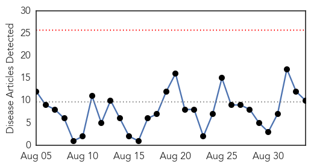
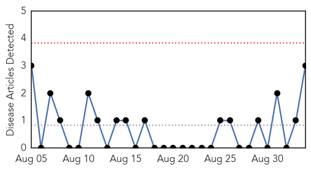
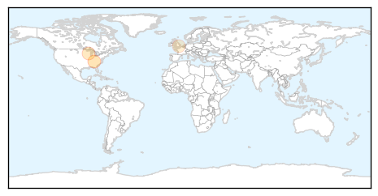
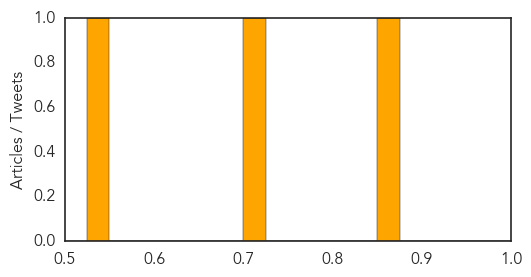

Influenza
30-Day Web Trend
0 alerts, 0 warnings

30-Day Twitter Trend
7 alerts, 0 warnings

Article Locations

Article Confidences

Top Articles:
- 0.994
- Australia's flu season peaks
- 0.986
- Flu warning issued as reported cases soar
- 0.962
- Almost Half of Queensland’s 18,000 Cases Have Occurred in Past Three Weeks
- 0.945
- Egg shortage won't affect flu vaccine supply
- 0.751
- September 2, 2015 Archives
- 0.751
- September 2, 2015 Archives
- 0.751
- September 2, 2015 Archives
- 0.742
- South Dakota Implements Equine Requirements for State Fair
- 0.683
- New Study by Indian American researcher shows Anaesthesia may help fight flu — Health, Indians Abroad, Science & Technology
- 0.673
- Poultry Growers Brace for New Round of Bird Flu as Wild Birds Fly South
Top Tweets:
-
No tweets found for Sep 03, 2015
Mold/Fungal
30-Day Web Trend
0 alerts, 0 warnings

30-Day Twitter Trend
0 alerts, 0 warnings

Article Locations
Article Confidences
Top Articles:
Top Tweets:
-
No tweets found for Sep 03, 2015